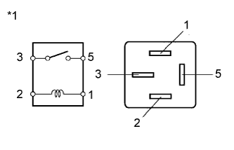

DTC C1752/52 Неисправность электродвигателя компрессора |
| Код DTC | Условие обнаружения DTC | Неисправный участок |
| C1752/52 | При включенном реле AIR SUS в течение не менее 4 с регистрируется сигнал блокировки электродвигателя компрессора регулировки высоты. |
|
| 1.ПРОВЕРЬТЕ РЕЛЕ УПРАВЛЕНИЯ ПОДВЕСКОЙ (AIR SUS) |
Выключите зажигание.
Извлеките реле AIR SUS из блока реле моторного отсека.
|  |
Измерьте сопротивление в соответствии со значениями, приведенными в таблице ниже.
| Контакты для подключения диагностического прибора | Условие | Заданные условия |
| 3 - 5 | Напряжение аккумуляторной батареи 12 В не подается на контакты 1 и 2 | 10 кОм или более |
| Напряжение аккумуляторной батареи 12 В подается на контакты 1 и 2 | Менее 1 Ом |
| *1 | Реле пневмоподвески AIR SUS |
|
| ||||
| OK | |
| 2.ПРОВЕРЬТЕ НАПРЯЖЕНИЕ НА КОНТАКТЕ (ПИТАНИЕ) |
Извлеките реле AIR SUS из блока реле моторного отсека.
Измерьте напряжение в соответствии со значениями, приведенными в таблице.
| Контакты для подключения диагностического прибора | Условие | Заданные условия |
| Контакт 5 реле AIR SUS блока реле моторного отсека - масса | Всегда | 11 - 14 В |
| *a | Устройство без реле AIR SUS (блок реле моторного отсека) |
|
| ||||
| OK | |
| 3.ПРОВЕРЬТЕ ЖГУТ ПРОВОДОВ И РАЗЪЕМ (КОМПРЕССОР РЕГУЛИРОВКИ ВЫСОТЫ – РЕЛЕ AIR SUS/ЭБУ УПРАВЛЕНИЯ ПОДВЕСКОЙ) |
Отсоедините разъем S11 компрессора регулировки высоты.
Извлеките реле AIR SUS из блока реле моторного отсека.
Отсоедините разъем A14 ЭБУ управления подвеской.
Измерьте сопротивление в соответствии со значениями, приведенными в таблице ниже.
| Контакты для подключения диагностического прибора | Условие | Заданные условия |
| S11-1 (B) - контакт 3 реле AIR SUS блока реле моторного отсека | Всегда | Менее 1 Ом |
| S11-1 (B) - масса | Всегда | 10 кОм или более |
| S11-2 (E) - масса | Всегда | Менее 1 Ом |
| A14-19 (RM+) - S11-3 (RM+) | Всегда | Менее 1 Ом |
| A14-19 (RM+) - масса | Всегда | 10 кОм или более |
| A14-17 (RM-) - S11-4 (RM-) | Всегда | Менее 1 Ом |
| A14-17 (RM-) - масса | Всегда | 10 кОм или более |
|
| ||||
| OK | |
| 4.ПРОВЕРЬТЕ КОМПРЕССОР РЕГУЛИРОВКИ ВЫСОТЫ (ЭЛЕКТРОДВИГАТЕЛЬ КОМПРЕССОРА) |
Снимите компрессор регулировки высоты (Нажмите здесь).
Подайте напряжение аккумуляторной батареи 12 В на электродвигатель компрессора и проверьте его работу.
| Условия измерений | Заданные условия |
| Положительное (+) напряжение аккумуляторной батареи 12 В → контакт 1 (B) Отрицательное (-) напряжение аккумуляторной батареи 12 В → контакт 2 (E) | Электродвигатель работает. |
| *a | Устройство с неподсоединенным жгутом проводов (компрессор регулировки высоты подвески) |
|
| ||||
| OK | ||
| ||